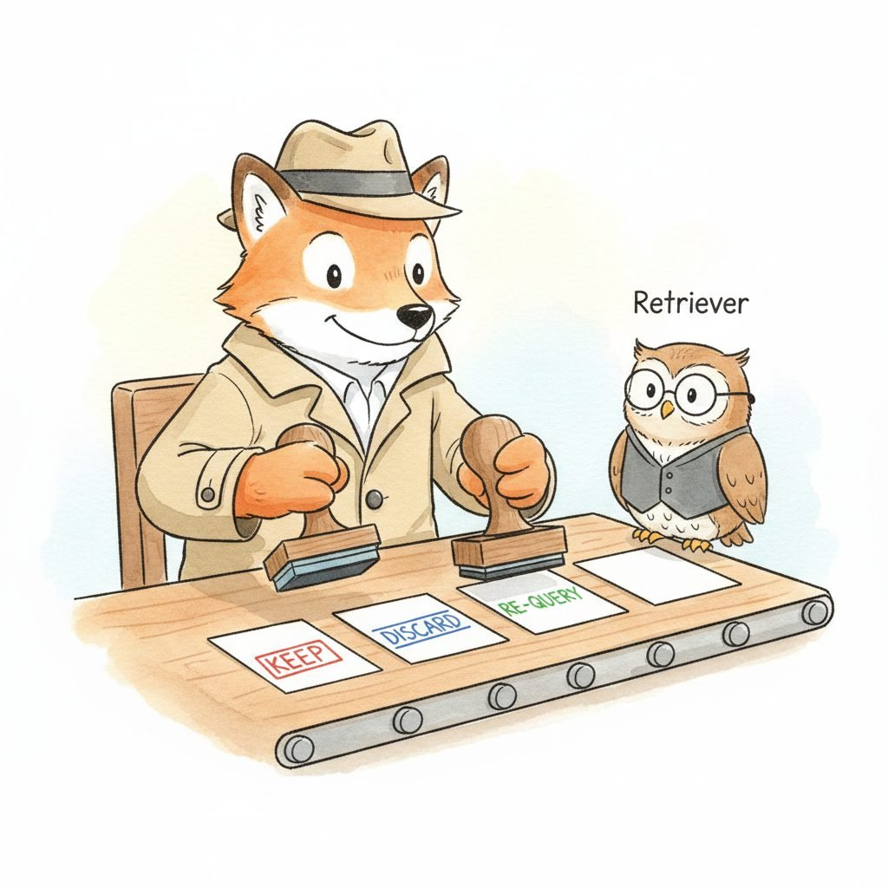

"To my agent, the vector database is just another endpoint with a schema. The interesting question is when it decides to call me."
RAG, Tool-Surface-Aware AI Agent
This section views retrieval through the tool-use lens of Chapter 27, not the RAG-architecture lens. The full agentic-RAG treatment, including query decomposition, multi-source orchestration, the CRAG / Adaptive-RAG / Self-RAG patterns, source credibility, and synthesis, lives in Section 32.3. Here we look at what changes when retrieval is exposed to an agent as a function-callable tool: how the agent decides to invoke it, what the schema should look like, and how the tool-use loop handles retrieval errors and partial failures alongside every other tool call.
Prerequisites
This section assumes the function-calling mechanics from Section 27.1 and the custom-tool design discipline from Section 27.4. RAG fundamentals and the architectural treatment of agentic RAG are covered in detail later in the book; this section is the agent-side counterpart.

27.5.1 Retrieval From the Agent Side
Retrieval-as-a-tool reframes RAG as a decision the model gets to make rather than a pipeline stage you wire in. The pleasing consequence is that the model often decides not to retrieve, which costs almost nothing. The less-pleasing consequence is that the model also often decides not to retrieve when it really should.
The RAG literature usually frames retrieval as the spine of an architecture: documents come in, queries route through a pipeline, the LLM rides on top. A tool-using agent inverts that framing. From inside the agent loop, retrieval is just another callable function alongside send_email, run_sql, or read_file. The agent does not "do RAG"; it makes a tool call whose name happens to be search_docs, receives a payload, decides whether to call it again, and continues planning.
This shift matters because the tool-use machinery from Section 27.1 already gives the agent everything it needs to drive retrieval: a schema describing how to query, a way to inspect results, a way to retry, and a way to combine results with calls to other tools. Most of the patterns described as "agentic RAG" in the literature are simply instances of good tool design applied to a retriever. The agent-side question is therefore not "what does an agentic RAG architecture look like?" (answered in Section 32.3) but "what does a well-shaped retrieval tool look like, and when should the agent call it?".
An agent does not need to know that it is doing RAG. If the retrieval tool has a precise schema, returns structured passages with source IDs, and surfaces a useful error when it has nothing relevant, the same ReAct or planner-executor loop that drives every other tool call will drive retrieval correctly. The architectural choices about how the retriever is implemented (corrective grading, query decomposition, multi-source fan-out) belong on the retriever side, where the RAG team owns them, not in the agent prompt.
27.5.2 Shaping a Retrieval Tool
A retrieval function exposed to an agent needs a tool schema that the model can reliably target. The schema design follows the rules from Section 27.4, with three retrieval-specific obligations: a query parameter the agent can populate from natural language, a way to scope the search (a corpus name, a filter, or a date range), and a stable result shape with provenance so the agent can cite or re-rank what it gets back.
# A retrieval tool exposed to an agent via the function-calling interface.
# The agent picks `query`, `corpus`, and optional filters; the wrapper
# handles vector search, formatting, and error surfaces.
from typing import Literal, Optional
from pydantic import BaseModel, Field
class SearchDocsArgs(BaseModel):
query: str = Field(..., description="A natural-language search query.")
corpus: Literal["product_docs", "runbooks", "slack_archive"] = Field(
description="Which knowledge base to search."
)
since: Optional[str] = Field(None, description="ISO date filter (YYYY-MM-DD).")
k: int = Field(5, ge=1, le=20, description="Number of passages to return.")
def search_docs(args: SearchDocsArgs) -> dict:
"""Vector-search a named corpus and return structured passages.
Returns a stable JSON shape: a list of passages with source_id,
score, and excerpt, plus a `status` the agent can branch on.
"""
hits = retriever.search(
corpus=args.corpus,
query=args.query,
k=args.k,
filter={"date_gte": args.since} if args.since else None,
)
if not hits:
return {"status": "no_results", "passages": [],
"hint": "Try a different corpus or broader query."}
return {
"status": "ok",
"passages": [{"source_id": h.id,
"score": round(h.score, 3),
"excerpt": h.text[:800]}
for h in hits],
}
status, source_id, and score so downstream tool calls can re-rank or cite.Three schema choices in this example matter more than the implementation. First, the corpus is an enum, not a free-form string. Agents will hallucinate plausible-sounding collection names ("technical_docs", "internal_kb") if given the option; a closed set forces them to pick a real one or fail loudly. Second, every passage carries a source_id; this is the hook the agent uses later to attribute claims in its final answer. Third, the empty case returns status: no_results with a hint, not an exception. As described in Section 27.4, errors that the model can read and act on outperform errors that bubble up as Python tracebacks.
27.5.3 When the Agent Decides to Retrieve

A naive RAG system retrieves on every turn; an agent only retrieves when it judges it needs to. The decision lives in the model's chain of reasoning, not in pipeline plumbing, and the prompt shapes it the same way a prompt shapes any other tool selection. Three failure modes are worth budgeting for.
- Over-retrieval. Without a clear instruction, models often call
search_docsfor trivia they already know (capitals, definitions, public-domain facts) because retrieval feels safe. A one-line system prompt ("Only callsearch_docsfor facts that depend on internal knowledge or recent events") suppresses most of this. - Under-retrieval. The opposite failure mode: the model confidently answers from parametric memory when it should look something up. The mitigation is to make the cost of not retrieving visible, by requiring source citations in the final answer.
- Premature retrieval. The agent fires a query before the question is clear, retrieves noise, and lets that noise contaminate downstream reasoning. Tools like
clarify_questionor an explicit planning step before any tool call reduce this; see also the Adaptive-RAG pattern in Section 32.3.
Inside the loop, an agent can issue several retrieval calls in sequence, refining the query each time. The mechanism is identical to chaining any other tool: the model reads the previous result, generates a new tool_call, and the runtime executes it. The retrieval-architecture concerns of CRAG (grade results then fall back), Adaptive-RAG (route by query complexity), and Self-RAG (in-model retrieval gating) are covered in Section 32.3; at the tool-use level, each of those is one more loop iteration with a different prompt.
The four LangGraph nodes that make a self-correcting agentic-RAG loop are: generate retrieval query (which may differ from the user's literal question), retrieve (calls search_docs as in Code Fragment 27.5.1), grade documents (a structured-output LLM call that labels each passage relevant or not against a small schema), and a conditional rewrite-or-answer step that either rephrases the question and loops back to retrieve, or proceeds to a final answer-generation node. The grader is the part this section's tool-call surface does not cover: it is a Pydantic-validated LLM call, not a tool. The canonical end-to-end LangGraph implementation lives in Section 32.3 (architectural framing) and Section 35.3 (CRAG / Self-RAG / Adaptive-RAG comparison); the tool-use surface in this section is one of the four nodes, not the whole loop.
27.5.4 Error Handling for Retrieval Tool Calls
Retrieval tools fail in characteristic ways that the agent should be able to recover from. The four canonical failure modes:
- Empty result. The corpus had nothing relevant. Return
status: no_resultswith a hint pointing at other corpora or query reformulation. - Low-confidence result. Passages came back but the top score is below a threshold. Return them with a
low_confidenceflag rather than silently passing them through; this lets the agent decide whether to trust them, requery, or escalate to a human. - Backend timeout. The vector index or web search is slow or down. Surface
status: timeoutso the agent can fall back to a cached corpus, a different tool, or an apology, rather than hanging the entire loop. - Quota or rate-limit error. Some retrieval tools (paid search APIs in particular) have per-minute caps. The tool wrapper should return a structured error with a recommended wait time, which the agent can use to pace its calls; see the broader tool-economy treatment in Section 27.6.
Who: A chief of staff at a 500-person SaaS company who spent 10 hours a week gathering cross-departmental information for executive reports.
Situation: Company knowledge was scattered across five systems: Confluence wiki, Jira, a PostgreSQL analytics database, Slack, and Google Drive. Answering a simple executive question like "Why did Q3 revenue drop?" required manually querying three or four of these systems and stitching the results together.
Problem: A first-generation RAG system embedded all documents into a single vector store, but it could not answer questions that needed SQL queries (revenue figures), real-time API data (Jira ticket status), or recent Slack messages. The system answered only 34% of executive questions accurately.
Decision: The team treated each data source as a separate tool with descriptive metadata, exposed through the function-calling surface from Section 27.1. The agent routed "What was our Q3 revenue?" to run_sql, "How do I configure SSO?" to search_docs(corpus="confluence"), and multi-source questions like "Why did Q3 revenue drop?" to run_sql, search_jira, and search_slack in parallel, then synthesized the findings.
Result: Accurate-answer rate rose from 34% to 81%. Weekly information-gathering time dropped from 10 hours to 2, with the remaining time spent verifying agent outputs.
Lesson: The agent-tool-use perspective often beats a monolithic vector store. Source-aware routing preserves each data system's native query capabilities, and tools with clear schemas and structured errors let the model pick the right one without prompt-engineering heroics.
Retrieval is the easiest tool to over-use, because it almost always returns something. Agents that retrieve on every turn rack up cost and latency for marginal accuracy gains, and the extra context can degrade reasoning by burying the relevant signal. Budget retrieval calls the same way you budget any other tool, with a per-task call cap and a check that the result actually influenced the next step.
- From inside the agent loop, retrieval is just one more typed tool call: schema, result, error, next step.
- A well-shaped retrieval tool uses enums for corpora, returns structured passages with source IDs, and surfaces empty and low-confidence cases as readable statuses, not exceptions.
- The "when to retrieve" decision lives in the model's prompt, not in pipeline plumbing; the main failure modes are over-retrieval, under-retrieval, and premature retrieval.
- Architectural patterns like CRAG, Adaptive-RAG, and Self-RAG belong inside the retriever or in the RAG-architecture treatment of Section 32.3, not in the agent prompt.
Show Answer
Free-form tools invite the agent to invent collection names or query semantics that the backend cannot honor. A closed enum (or a small set of explicit tools) makes the available knowledge sources legible to the model and prevents silent failures where the agent thinks it queried a corpus that does not exist.
Show Answer
Schema: split a single search tool into corpus-specific tools so the agent must pick a knowledge base. Prompt: add an instruction that restricts retrieval to facts that depend on internal knowledge or recent events, with one worked example of declining to retrieve.
Exercises
Write a JSON Schema for a search_docs tool that exposes three corpora and a date filter. Validate that an agent cannot pass an invalid corpus name. Decide whether k should be an agent-controlled parameter or a server-side default, and justify your choice.
Answer Sketch
Use a closed enum for corpus and format: date for the filter. Make k a server-side default with an upper bound: agents are good at picking queries but poor at picking the right k, and unbounded k is an easy way to blow up the context window.
An agent is over-retrieving: it calls search_docs on every turn, even for general-knowledge questions. Propose two prompt-level mitigations and one schema-level mitigation.
Answer Sketch
Prompt level: (1) a system-prompt instruction restricting retrieval to "facts that depend on internal knowledge or recent events"; (2) a worked example of declining to retrieve. Schema level: split search_docs into separate corpus-specific tools so the agent must commit to a specific knowledge base, which raises the implicit cost of an unnecessary call.
Extend the search_docs implementation from Code Fragment 27.5.1 to return a low_confidence status when the top result's score is below 0.4. Write a short agent-side prompt fragment that tells the model how to handle each of ok, low_confidence, no_results, and timeout.
An engineer proposes exposing CRAG as a parameter on the retrieval tool (mode: "naive" | "corrective"). Argue for or against this design choice. Where should the corrective behavior live, the tool or the agent loop?
Answer Sketch
Argue against. The CRAG decision (grade results, fall back to web) is a retriever-implementation detail that should be opaque to the agent. Exposing it as a parameter forces the agent to reason about retrieval architecture, which it is bad at. Put corrective behavior inside the tool, behind the same schema, and let the retriever team change strategy without re-prompting every agent that depends on it.
What Comes Next
In Section 27.6 we look at multi-tool orchestration and the tool economy: how an agent chooses among many tools, how to budget cost and latency, and how to cache and parallelize tool calls. The full architectural treatment of agentic retrieval, including CRAG, Adaptive-RAG, Self-RAG, query decomposition, source credibility, and synthesis, lives in Section 32.3.